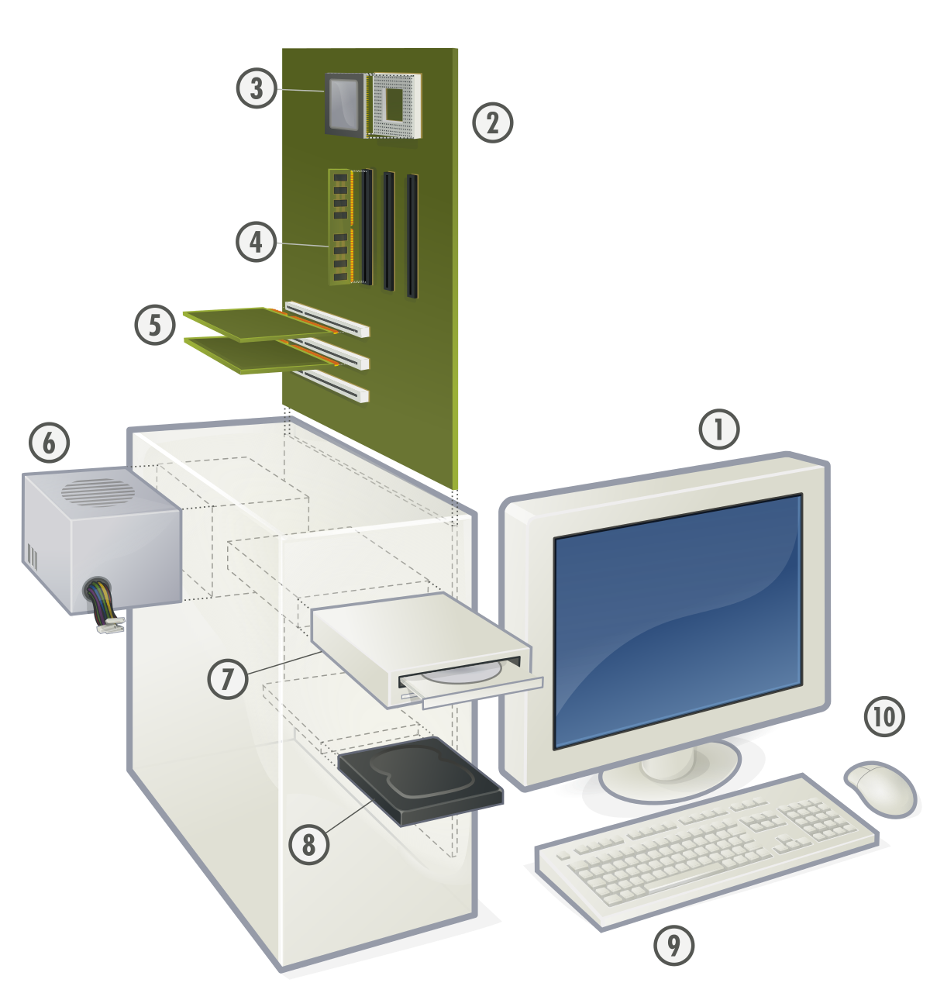
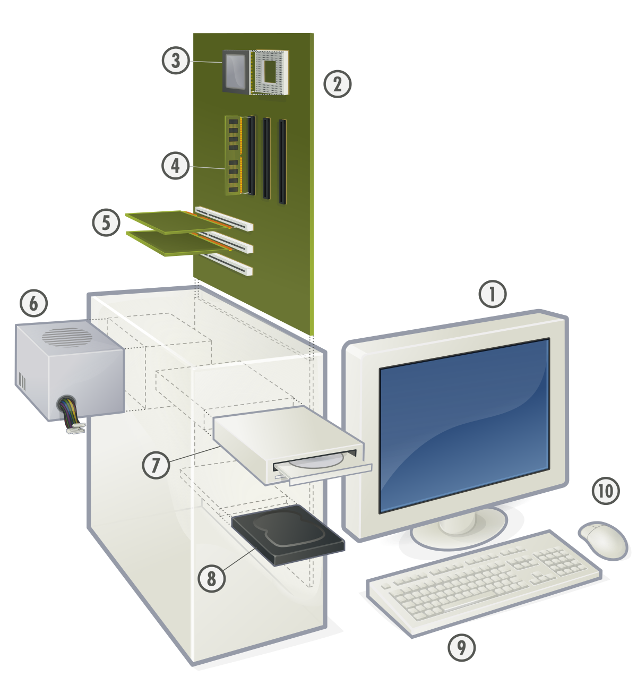

Características de los Sistemas Operativos.
Conveniencia
Un Sistema Operativo hace más conveniente el uso de una computadora.
Al poder realizar distintas tareas tanto complejas como simples, resulta sumamente
conveniente utilizar una computadora con Sistema Operativo adaptado a las distintas
necesidades.


 
